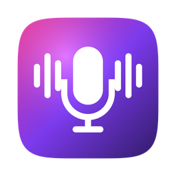
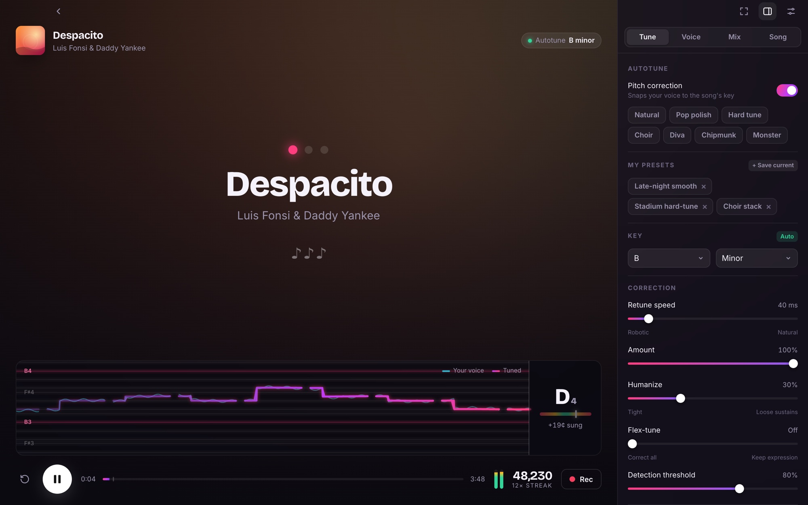

Open Karaoke GitHub ↗Free, open-source karaoke for your computer. Search any song, hit start, and sing over the instrumental with synced lyrics and a real-time autotune. All you need is an internet connection.
Download Open Karaoke
xattr -cr "/Applications/Open Karaoke.app" in Terminal.chmod +x OpenKaraoke-Linux.AppImage then run it.Open Karaoke finds the best instrumental automatically, or strips the vocals itself when there isn't one.
Low-latency pitch correction with retune speed, humanize, flex-tune, vibrato, formant control and harmonies.
Synced, word-by-word lyrics, automatically aligned to the instrumental you're singing over.
Record a take, loop it and dial in your sound before you sing, then save it as your own preset.
Gate, EQ, de-esser, compressor, echo and reverb, plus key and tempo changes for the music.
Save your performance as a WAV with latency compensation, and get scored on your pitch accuracy.